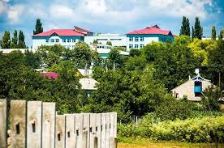

Regiune
Sudul Republicii Moldova, bazinul fluviului Nistru, câmpie ușor ondulată la 51 m altitudine.
Raionul Căușeni, Republica Moldova
Oraș cu suflet moldovenesc — Raionul Căușeni
Căinari este un oraș cu statut urban din raionul Căușeni, situat în partea central-sudică a Republicii Moldova. Localitatea a evoluat dintr-un sat cu caracter agricol pronunțat într-un centru urban funcțional, cu infrastructură diversificată și servicii publice moderne. Istoria sa este strâns legată de destinul întregii regiuni Căușeni, atestată documentar încă din anul 1455.
În perioada medievală, teritoriul actual al raionului Căușeni se afla pe rutele comerciale și militare care legau sudul Basarabiei de restul Moldovei Istorice. Influențele otomane, rusești și românești s-au succedat de-a lungul secolelor, lăsând urme vizibile în arhitectura și cultura populației locale.
Conform recensământului din 2004, populația orașului era de 4.184 de locuitori, din care 2.066 bărbați și 2.118 femei. Comunitatea este cu o cultură tradițională vie, exprimată prin festivaluri folclorice și gastronomie autentică.
După proclamarea independenței Republicii Moldova în 1991, Căinari s-a adaptat noilor realități economice și administrative, primind statut de oraș și continuând să-și dezvolte serviciile publice, educația și viața culturală.
Căinari beneficiează de o poziție geografică strategică, aflat la intersecția principalelor căi rutiere din sudul Republicii Moldova, la distanță relativ mică față de capitala Chișinău.
Sudul Republicii Moldova, bazinul fluviului Nistru, câmpie ușor ondulată la 51 m altitudine.
Continentală moderată, veri calde și ierni blânde. Precipitații anuale de aprox. 450–500 mm.

Legătură directă cu Chișinău (38 km), Căușeni (41 km) și acces la frontiera cu Ucraina.
Orașul dispune de o infrastructură educațională și culturală solidă, care răspunde nevoilor comunității și păstrează vii tradițiile locale.
Căinari dispune de instituții de învățământ preșcolar și primar-gimnazial. Un reper cultural important este Școala de Muzică din Căinari, care oferă cursuri de instrumente muzicale, teorie muzicală și ansamblu vocal pentru copii și tineri.
Muzeul local din Căinari păstrează și expune obiecte, documente și fotografii care reflectă istoria și tradițiile comunității de-a lungul secolelor. Vizitatorii pot descoperi aici unelte tradiționale, costume populare și mărturii ale vieții cotidiene din trecut.
Locuitorii beneficiează de servicii medicale primare prin Centrul de Sănătate local. Raionul Căușeni dispune de un spital cu 292 de paturi, 19 unități de medicină de familie și 13 centre de sănătate.
Comunitatea promovează sportul în rândul tinerilor. Raionul dispune de Centrul de Tineret și Sport din Căușeni, inaugurat în 2013, cu săli pentru gimnastică și lupte marțiale.
Lăcașul de cult ortodox al orașului reprezintă centrul vieții spirituale al comunității, organizând slujbe regulate și activități religioase care reunesc generații de credincioși din Căinari și din localitățile înconjurătoare.
Economia localității Căinari se bazează în principal pe agricultură, comerț și servicii, reflectând profilul economic al raionului Căușeni — una dintre zonele cu cel mai mare potențial agricol din Moldova. Raionul are 15.721 de companii înregistrate și un salariu mediu brut lunar de aproximativ 9.371 lei.
Căinari este o localitate cu profil agricol pronunțat, unde se cultivă în principal grâu, porumb, floarea-soarelui și orz. De asemenea, sunt dezvoltate plantațiile de livezi și legumicultura.
În localitate și în împrejurimi sunt cultivate soiuri tehnice de struguri utilizați la producerea vinurilor albe și roșii, viticultura reprezentând o activitate agricolă tradițională a populației.
În orașul Căinari activează magazine alimentare și mixte, piețe locale, farmacii și unități de alimentație publică.
Amplasare favorabilă pe ruta Chișinău–Căușeni, cu acces spre Ucraina și Giurgiulești.
Primăria orașului Căinari este instituția administrației publice locale care asigură servicii cetățenilor, gestionează patrimoniul municipal și coordonează dezvoltarea comunității. Suntem la dispoziția tuturor cetățenilor și vizitatorilor noștri.